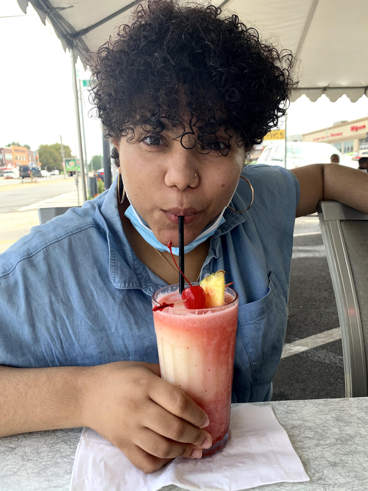
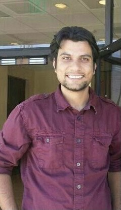

This event will take place virtually on Friday, November 6, schedule below. We are currently looking for additional panelists, including those who are not currently recruiting to speak on any of morning topics listed below. Please fill out this form to indicate your availability.
Attention Prospective Graduate Students!! (Yes, you!)
If you are interested in attending this event, please fill out this questionnaire.
Attention Current PhD Students!
Please help us collect data for your future colleagues! We ask that you fill out this form, to help both recruiting faculty and prospective graduate students understand the financial landscape of PhD programs in computing. Please share widely!
Schedule ·
Logistics
Recruiting Faculty · Current Students · Non-Academic Panelists · Acknowledgements
What makes this event different?
This event was designed with the observation that many students do not consider an advanced degree in computing because they believe academia is not for them. This was an issue before the pandemic and will lead to a disasterous shortcoming of computing professionals in the United States, given volitility in US immigration policy. Our objective is to match junior (i.e., new) faculty members whose recruiting efforts have been hampered by the pandemic with students whose career prospects may have been hampered by the pandemic.
Through this event we will discuss PhD training as work: we will discuss pay, benefits, and norms. We advocate that students view the PhD as an apprenticeship and highlight the variety of career paths that the PhD opens up. We emphasize that the priority for students and faculty alike will be finding a healthy working relationship between the two parties. Finally, in recognition of the fact that the PhD application process can be daunting, especially when students face inordinate stress and uncertainty, we aim to smooth the path for them.
Schedule
All times are listed in Eastern Standard Time.
| 09:00-09:15 | Welcome + Introduction to Tooling |
| This will be a pre-recorded message explaining Zoom and Discord - Have everyone log into Discord
- Have everyone log into Zoom to say "hi"
- Community troubleshooting
|
| 09:15-09:40 | Why Graduate School, Why Now? |
| Brittany Johnson & Emma Tosch |
| This session will discuss why graduate school can be a good option, particularly right now. Some major points of discussion: - Graduate school can be a safety net during economic contraction
- Address why stay in academia when there is important work in e.g. activism that students may be compelled to do right now
|
| 09:40-10:00 | Break |
| Check into affinity group channels, meet some new folks! |
| 10:00-10:25 | Graduate School is a Job |
| TBD |
| - Discussion of Pay
- Discussion of TA vs RA vs fellowships
- Explanation of the PI’s perspective and how understanding this is helpful
|
| 10:30-10:55 | Graduate School is not a Job |
| TBD |
| - Discussion of what the PhD actually is
- Must work in an area where you can receive guidance/mentorship
- How it is more like an apprenticeship
- Developing mastery of a topic, building skills along the way
|
| 11:00-11:20 | Break |
| Give students the chance to connect with faculty |
| 11:20-11:45 | Working toward mastery: technical skills |
| TBD |
| Emphasis should be on the idea that these four are skills everyone must have in some capacity to make progress and get a PhD. The farther along you are when you start, the easier some things will be. No one will be excellent at all four, and everyone should work on these skills every day:- Programming/Coding
- Reading papers (and doing so quickly!)
- Math/formalization
- Writing
- Experiment design + human subjects (pivot)
|
| 11:50-12:15 | Working toward mastery: research skills |
| TBD |
| Emphasis should be on the idea that this is what your advisor is actually teaching you; if you learn basic technical skills from them, that’s a bonus, but their job is to actually teach you about the business of doing research and/or working in academia: - Identifying interesting research questions
- Forming hypotheses
- Designing formalisms and/or experiments to evaluate those questions
- Evaluating your own work
- Navigating related work
- Critiquing others’ work
|
| 12:20-13:40 | Lunch break/power naps |
| 13:40-15:00 | Faculty-student breakout rooms |
| Recruiting Faculty |
| Each faculty member who is recruiting students will host a breakout room. We encourage faculty to provide <2min video summaries of their research, to be advertised ahead of the event |
| 15:05-16:25 | Concurrent non-faculty breakout rooms |
| Three breakout rooms featuring: - Current students talk about about their experiences regarding graduate school.
- Graduated CS students who perhaps did REUs or had some research experience and decided NOT to go to graduate school
- Graduated PhDs who are not in academic positions, to talk about non-faculty paths that the PhD opens up
|
| 16:30-16:40 | Closing remarks |
| - How to follow up
- Keep in touch
- We will send reminder emails that you can opt-out of
|
Top
Logistics
The event will consist primarily of panels and a meet-and-greet with faculty. We will use Discord for chat, and will post Zoom links for our interactive discussions.
Why Discord AND Zoom?
Discord allows voice and video chatting, so why also use Zoom? We would like to have the option of recording panels (with participants' permission), and Zoom allows us to do this easily. We would also like to simulate the experience of being in different "spaces" when there are talks/panels/breakout rooms versus casual chat. This means that if you feel overwhelmed or are not interested in a current panel, you can meet other attendees in Discord and have either totally private chat, or in public channels.
Top
Morning Session Panelists
The morning session will consist of panels where current faculty answer questions about PhD training.
Recruiting Faculty
These are junior faculty (i.e., new folks at their universities!) who are looking to hire students in 2021. Pop into a breakout room during the [faculty-student](#matching) session to connect with them as a possible future advisor!
 Emma Tosch · Programming Languages (PL), Experimental Design, general intersection of PL/Systems and Data Science/Machine Learning |
 Brittany I. Johnson · Software Engineering, Human-Computer Interaction (HCI), Machine Learning |
 Emma Strubell · Natural Language Processing (NLP), Machine Learning, Green AI |
 Joe Near · Privacy, Security, Programming Languages |
 Jeremiah Onaolapo · Cybersecurity, Social Network Security, Understanding malicious activity in online accounts |
 Jesse Thomason · Natural Language Processing for Robotics (RoboNLP), Grounded Language Learning |
 Katharina Kann · Natural Language Processing, Machine Learning |

Wesley Tansey · Machine Learning, Bayesian methods, Computational biology, Cancer genomics |
 Frank Ferraro · Natural Language Processing, Semantics, Semi-supervised & Unsupervised Machine Learning (ML), Grounded language (vision & language) |
 Xi He · Privacy, databases |
 Owen Arden · Language-based security, PL, security, distributed systems |
 Stefan Muller · Broadly: programming languages (PL). Specifically: Applications of PL techniques, type systems, parallelism, resource analysis. |
Top
Afternoon Panelists
The afternoon sessions will consist of panelists from a variety of career trajectories, at different points in their careers. They range from those who are currently making the decision of whether or not to pursue a PhD, those who had considered a PhD and decided it wasn't for them, those who decided to pursue industrial work with a PhD, and more!
Current Students
Come chat with current students during one of breakout sessions and hear about their paths to and from research in computing. Have a candid discussion about the ups and downs of graduate school, what to look for in an advisor, and when to walk away.
 | Krystal Maughan is a second year PhD student at the University of Vermont, where she is researching provable fairness, privacy and machine learning. She previously obtained an undergraduate degree in Film, Photography and Visual Arts, an a double minor in Theatre Arts and Art History. Before attending grad school, she worked in R&D for the film industry for several years and completed several software internships in the Bay area, as well a workshop at the Jet Propulsion Laboratory before starting graduate school at UVM. |
 | Annabel Rothschild is a first-year PhD student at Georgia Tech. After dabbling in many dark arts—including programming language syntax design, user-focused security and privacy, and (dis/mis)information—she settled happily into an interdisciplinary graduate program within a traditional CS department and a subsequent lifetime of trying to explain what exactly "Human-Centered Computing" means. Her current research adventures revolve around developing technical tools to assist in data literacy skill building. |
|  | Mayeline Peña is a Senior Computer Science and Dance major at Smith College who has done research as an undergraduate and is ambivalent about graduate school. In her own words, "Come and share with someone that understands what your biggest fears and hidden questions about what PhD programs are and where to go next. If you don't know what your questions are, perfect! Maybe my worries and queries can help you learn your own." |
Top
Possible Paths
In parallel with our student panelists, there will also be panelists who have had prior research experience in computing, but have chosen to go into industry, and panelists who have earned a PhD, and have chosen to follow a non-academic path. The former can provide a perspective on why graduate school might not be the right path. The latter can provide a perspective on the opportunities that a PhD in computing can open, that are not within academia.
What if I decide a PhD isn't for me?
Come chat with folks who had some computing research experience, either as undergraduates or Master's students, and decided that the PhD wasn't for them, for now.
 | Molly McMahon is a 2017 graduate of UMass Amherst, where she did her B.S. and M.S. in Computer Science. She has since been working in Boston as a software engineer at Viasat, most recently on various NLP applications for the automated customer care team. While at UMass, she participated in various REUs and independent studies in natural language processing, programming languages and systems, and causal analysis, as well as internships in various industries. |
Top
What can a PhD do other than be a professor?
|  | Rahul Pandita is a senior research scientist at Phase Change Software.
His primary research interests are in data science and automated software engineering. He specifically works in the area of program comprehension targeted towards improving developer/tester/end-user productivity.
Previously, Rahul worked as a postdoctoral researcher at Department of Computer Science NCSU working with Dr. Laurie Williams and Dr. Munindar Singh. He received his PhD. from NCSU in Computer Science. |
Top
Acknowledgements
This event was primary organized by Emma Tosch (University of Vermont) and Brittany Johnson Matthews (George Mason University), with generous support from CodePath. We also owe thanks to Joe Near and Emma Strubell for early feedback and helping to recruit other faculty. Thanks to Sara Kingsley for feedback on the current CS PhD student salary survey.